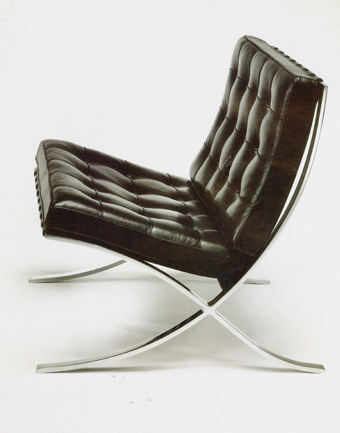

BARCELONA CHAIR - 1929
One of the most recognized objects of the last century, and an icon of the modern movement, the Barcelona Chair exudes a simple elegance that epitomizes Mies van der Rohe's most famous maxim "less is more". Ludwig Mies van der Rohe was selected to design the German Pavilion for the 1929 International Exposition in Barcelona. Initially created to be more of a monumental object than a chair, the Barcelona Chair achieves the serenity of line and the refinement of proportions and materials characteristic of Mies van der Rohe's highly disciplined architecture.was a fit for royalty.
One of the most recognized objects of the last century, and an icon of the modern movement, the Barcelona Chair exudes a simple elegance that epitomizes Mies van der Rohe's most famous maxim "less is more". Ludwig Mies van der Rohe was selected to design the German Pavilion for the 1929 International Exposition in Barcelona. Initially created to be more of a monumental object than a chair, the Barcelona Chair achieves the serenity of line and the refinement of proportions and materials characteristic of Mies van der Rohe's highly disciplined architecture.was a fit for royalty.
AIR MAX I - 1987
The Nike Air Max 1 was introduced in '87 and showcased for the very first time, a visible air unit. By contrasting bold red with clean white, the shoe consisted of a new midsole foot frame, heel notch and lace locks, making the Air Max 1 a prominent Nike innovation.
Before visible air, air-sole units were becoming thinner and thinner to make the manufacturing process easier. What Nike wanted to get back to was injecting more air in to the sole to achieve a strong cushioning sensation under the foot. That thought process was the first time Nike started talking about it as 'maximum air' or 'Max Air'. The Air Max 1 is also sometimes know as Air Max '87.
The Nike Air Max 1 was introduced in '87 and showcased for the very first time, a visible air unit. By contrasting bold red with clean white, the shoe consisted of a new midsole foot frame, heel notch and lace locks, making the Air Max 1 a prominent Nike innovation.
Before visible air, air-sole units were becoming thinner and thinner to make the manufacturing process easier. What Nike wanted to get back to was injecting more air in to the sole to achieve a strong cushioning sensation under the foot. That thought process was the first time Nike started talking about it as 'maximum air' or 'Max Air'. The Air Max 1 is also sometimes know as Air Max '87.